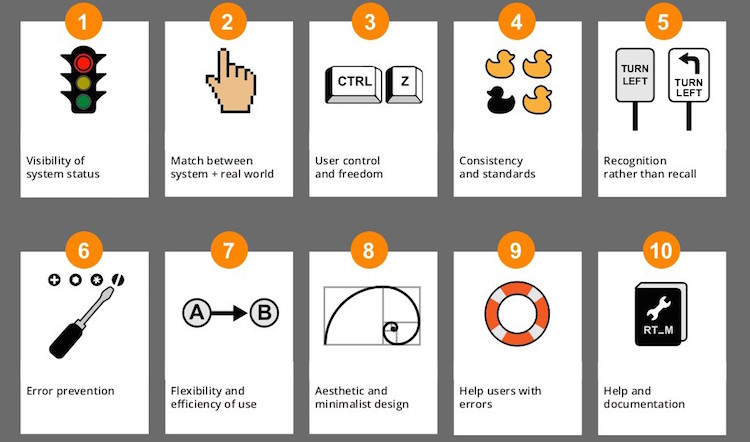

La usabilidad web describe en qué medida un sitio web es fácil de usar.
Si un sitio web es fácil de usar, los usuarios podrán alcanzar mejor los objetivos que persigue el sitio web.
Por lo tanto, un sitio web con buena usabilidad debe permitir al usuario utilizarlo de forma eficaz e intuitiva.

Visibilidad del estado del sistema |
Relación entre el sistema y el mundo real |
Control y libertad del usuario |
Consistencia y estándares |
Prevención de errores |
Reconocer antes que recordar |
Flexibilidad y eficiencia de uso |
Diseño estético y minimalista |
Ayudar a los usuarios a reconocer, diagnosticar y corregir los errores |
Ayuda y documentación |